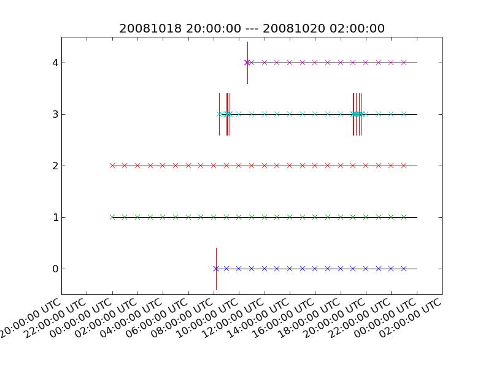

Often, you have a bunch of data and want to know which station is available at what time. For this purpose, ObsPy ships the obspy-scan script (automatically available after installation), which detects the file format (MiniSEED, SAC, SACXY, GSE2, SH-ASC, SH-Q, SEISAN, etc.) from the header of the data files. Gaps are plotted as vertical red lines, start times of available data are plotted as crosses - the data itself are plotted as horizontal lines.
The script can be used to scan through 1000s of files (already used with 30000 files, execution time ca. 45min), month/year ranges are plotted automatically. It opens an interactive plot in which you can zoom in ...
Execute something like following line from the command prompt, use e.g. wildcards to match the files:
$ obspy-scan /bay_mobil/mobil/20090622/1081019/*_1.*
